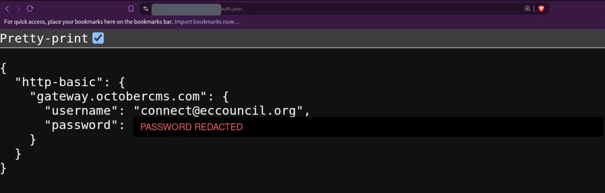
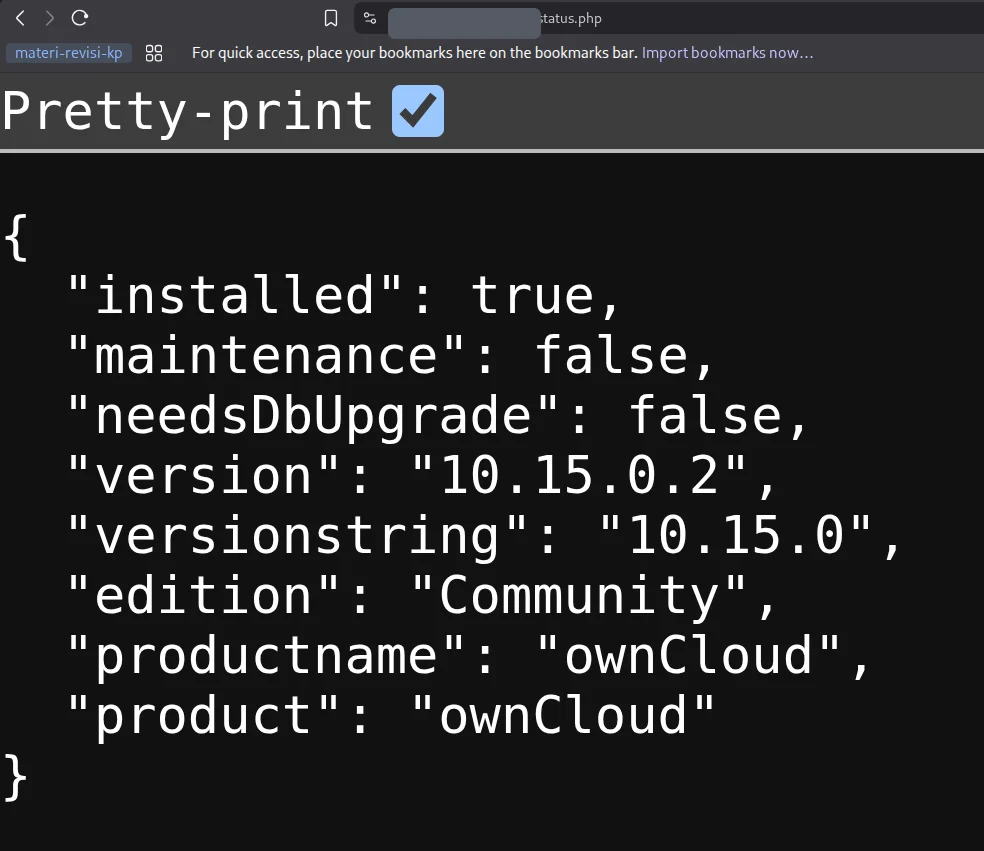
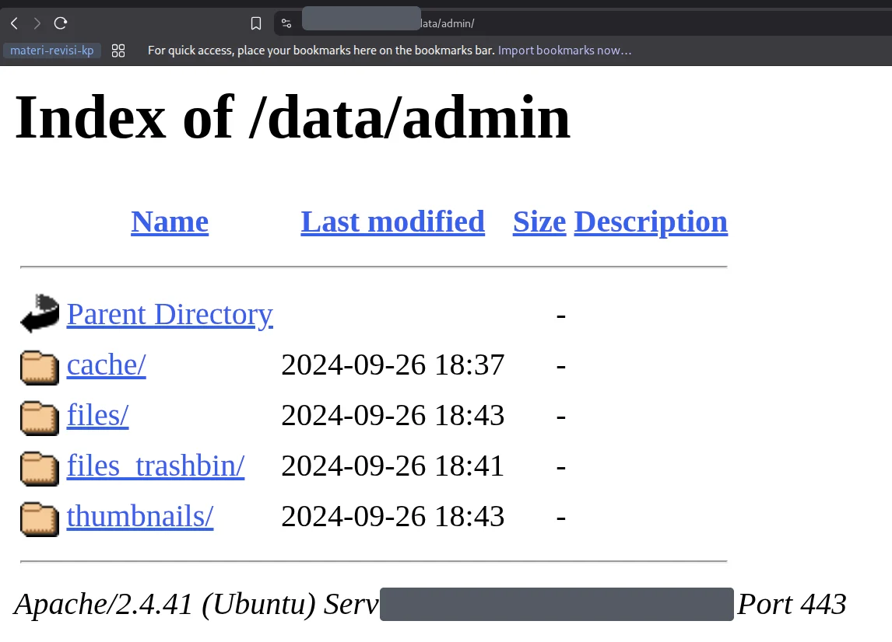
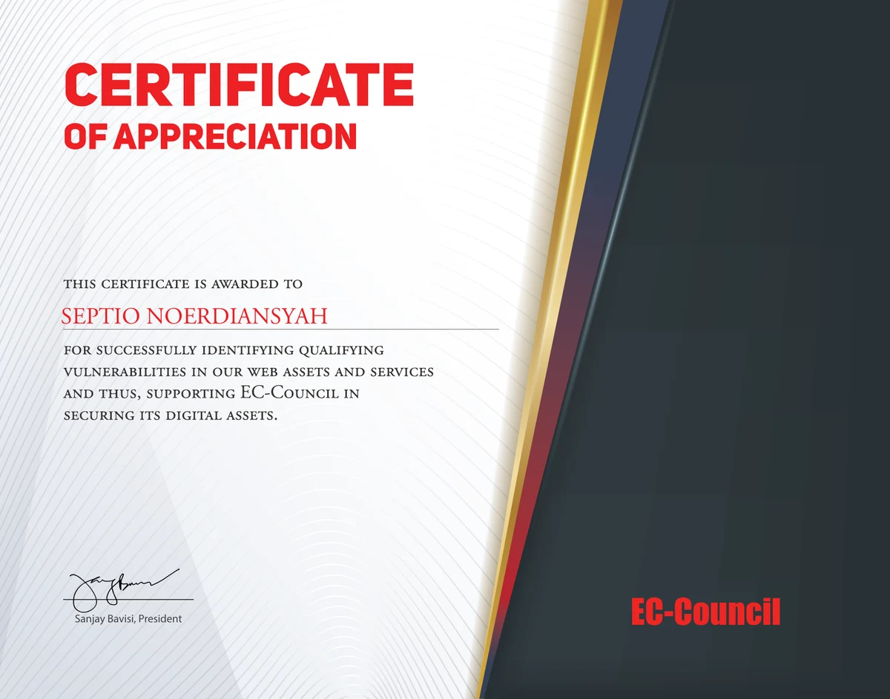

Disclaimer: Both findings in this article were reported to EC-Council through their bug bounty program and are published here after remediation. Sensitive values (credentials, internal log data) are redacted. Nothing here is a working exploit — these were plain, unauthenticated exposures found with a browser and an HTTP client.
Hi everyone! Hope you're all doing well.
This one's a little different from my usual writeups. Instead of a single deep exploit chain, it's a story about two boring-looking misconfigurations — the kind you find with a browser and a bit of patience — that both hit the same organization: EC-Council, the folks behind the CEH certification. Two unauthenticated information exposures, reported responsibly, that put my name in their Bug Bounty Hall of Fame and earned a signed Certificate of Appreciation.
No 0-day, no fancy payload. Just two files that were never meant to be public, being served straight off the web root. Here's how both went down.
Why EC-Council?
If you've spent any time in cybersecurity, you know EC-Council — they run the Certified Ethical Hacker (CEH) program and a whole family of security certifications. They also run a public bug bounty program with a Hall of Fame, which makes their in-scope assets fair game for responsible testing. When an organization that teaches security invites you to test their own surface, that's an invitation worth taking seriously.
I picked a couple of their subdomains and started doing what I always do first: looking for things that shouldn't be reachable without logging in.
Finding #1 — A Credential File Served Straight Off the Web Root
The first target was cybersecurity.eccouncil.org, which runs on October CMS (a Laravel-based CMS). October CMS projects use Composer for dependency management, and Composer stores private-repository credentials in a file called auth.json.
That file is never supposed to be web-accessible. So naturally, I asked for it:
GET https://[redacted]/auth.json → HTTP 200
It returned 200 OK with the full JSON document — an HTTP Basic credential for gateway.octobercms.com, the marketplace gateway October CMS uses for licensed themes and plugins:

The exposed auth.json — a live Composer gateway credential, served without any authentication. The password is redacted here; it was fully visible in the response.
Now, one exposed file could theoretically be intentional. So before reporting, I did two quick checks to prove this was an accident, not a decision:
GET /.gitignorereturned200— and it explicitly listedauth.jsonas a file that should never be committed or exposed. The project itself considered it secret.GET /.envcorrectly returned403 Forbidden— so the server did have protection for sensitive files. It just didn't coverauth.json.
Why this matters: the exposed file hands an unauthenticated attacker a valid Composer username and password for EC-Council's October CMS deployment. If that credential was still live, it could be used to authenticate to the gateway account and pull whatever licensed packages or account data it had access to — and if the same password was reused anywhere else in their infrastructure, the blast radius grows. I did not authenticate with it; verifying that would mean logging into a third-party service, which is out of scope. The finding stands on the disclosure alone.
I scored it CVSS 4.0:
CVSS:4.0/AV:N/AC:L/AT:N/PR:N/UI:N/VC:H/VI:N/VA:N/SC:N/SI:N/SA:N
Network-reachable, no privileges, no user interaction, high confidentiality impact. The fix is equally simple: pull auth.json out of the web root, deny direct access to deployment files (.env, .gitignore, composer.json/lock), serve the app from October CMS's recommended public/ document root, and rotate the leaked credential.
Finding #2 — An Entire ownCloud Data Directory, Public
The second target was fileshare.eccouncil.org, an ownCloud instance. First I fingerprinted the version through the unauthenticated status endpoint:
GET https://[redacted]/status.php

status.php — ownCloud Community 10.15.0.2, installed, not in maintenance mode. A live production instance.
In a correct ownCloud deployment, the data/ directory — where every user's files, the app log, and internal state live — sits outside the web root, or is blocked by bundled .htaccess rules so that ownCloud's own access control is the only way in. Here, Apache was serving data/ directly, before ownCloud ever got a chance to check who you were.
So a request to the admin user's data folder returned a plain Apache directory listing:
GET https://[redacted]/data/admin/ → Index of /data/admin

Directory indexing on /data/admin/ — ownCloud's internal cache, files, files_trashbin, and thumbnails folders, all reachable without a login.
Because the data directory bypasses ownCloud entirely, everything under it was fetchable with ordinary HTTP requests — no authentication, no headers, no user interaction. That included the application log, data/owncloud.log, which is a goldmine for reconnaissance. Without pasting the sensitive contents, the log alone leaked:
- Source and internal private IP addresses
- Account identifiers and database account names
- Internal filesystem paths
- Request metadata — URLs, methods, timestamps
- Authentication-failure events
- PHP, MySQL, and OpenSSL error messages
I re-tested on 05 August 2026 and it was still reproducible. Same CVSS 4.0 shape as the first finding — unauthenticated, network-reachable, high confidentiality impact:
CVSS:4.0/AV:N/AC:L/AT:N/PR:N/UI:N/VC:H/VI:N/VA:N/SC:N/SI:N/SA:N
The pattern across both findings: a file or directory that the application itself treats as private, being served directly by the web server before the application's access control ever runs. auth.json was in .gitignore; the ownCloud data/ dir ships with bundled protection rules. In both cases the app "knew" these were secret — the web server just never got the memo.
Responsible Disclosure & Recognition
Both issues went through EC-Council's bug bounty program with full reports — summary, reproduction steps, impact, and mitigation for each. The recommended fixes were the un-glamorous but effective kind: move sensitive files and directories out of the web root, enforce deny rules for deployment/config files, disable directory indexing, and rotate anything that may have been exposed.
A while later, EC-Council added me to their public Bug Bounty Hall of Fame and sent over a Certificate of Appreciation signed by their President:

EC-Council Certificate of Appreciation — for identifying qualifying vulnerabilities in their web assets and services. You can also find my name under the 2026 section of their Hall of Fame.
Takeaways
Neither of these was a clever bug. That's exactly why they're worth writing about:
- The web root is a trust boundary. Anything sitting in it is public until proven otherwise. Deployment artifacts —
auth.json,.env,.git/, backups, logs — belong outside it. - Framework "bundled protection" is not automatic. ownCloud ships
.htaccessrules to guarddata/, but they only work if the web server actually honors them. Verify, don't assume. - Check for intent before you report. The
.gitignorelistingauth.jsonand the.envreturning 403 turned "maybe this is on purpose" into a provable accidental exposure. That context makes a report much stronger. - Simple, high-impact findings count. You don't need an RCE to make a Hall of Fame. Confidentiality exposures with a clean, reproducible PoC are real, reportable bugs.
Sometimes the best recon is just asking the server for the one file it really shouldn't give you — and paying attention when it says 200 OK.
Key Takeaway: access control that lives only inside your application is worthless if the web server hands out the files first. Keep secrets and data directories out of the web root, and treat every deployment file in it as already public.
Maybe that's all from me. I'm RyuuKhagetsu, see you in next article.
Related Articles
Explore more cybersecurity insights and techniques